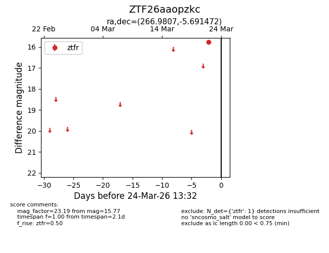
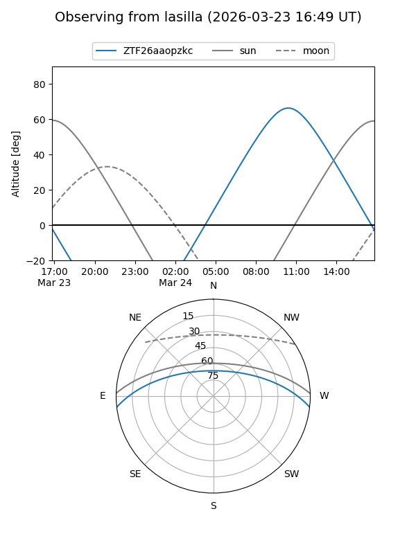
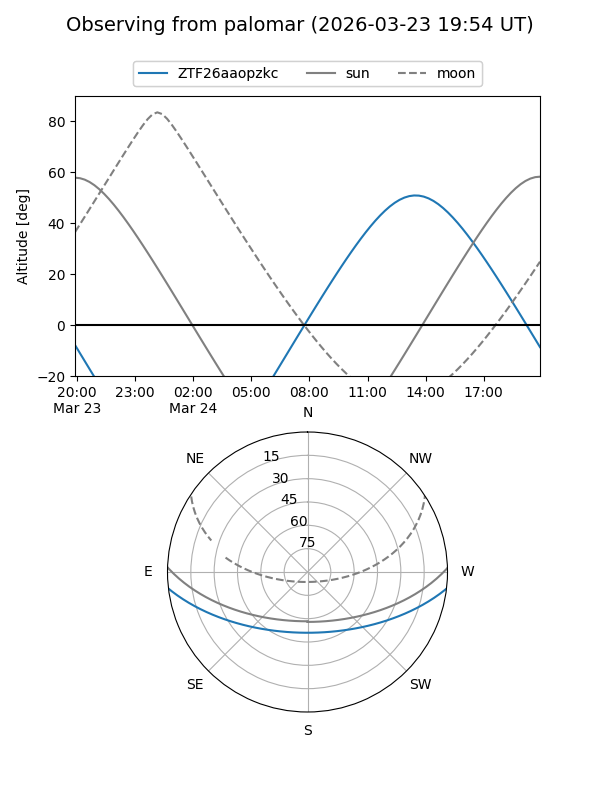

ZTF26aaopzkc
Target ZTF26aaopzkc at 2026-03-24 13:35
Aliases and brokers:
FINK: link
Lasair: link
ALeRCE: link
alt names
ZTF26aaopzkc (ztf,fink_ztf)
Coordinates:
equatorial (ra, dec) = 266.9807,-5.69147
equatorial (HMS+DMS) = 17:47:55.36,-05:41:29.30
galactic (l, b) = (20.4193,+11.36642)
Flags:
Photometry:
last ztfr=15.77
1 ztfr detections
Lightcurve

Visibility


Additional plots